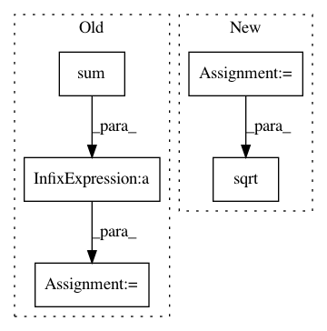

bfc15526354399bdd615f06cd5db7efd911e6eea,librosa/feature.py,,rms,#,326
Before Change
"""
N,K = np.shape(S)
rms = np.sqrt(np.sum(S*S,axis = 0)/N)
return rms
@cache
After Change
// If we don"t have a spectrogram, build one
if S is None:
// By default, use a magnitude spectrogram
S = librosa.stft(y, n_fft=n_fft, hop_length=hop_length)
return np.sqrt(np.mean(np.abs(S)**2, axis=0))
@cache
def line_features(S, order=1, sr=22050):
In pattern: SUPERPATTERN
Frequency: 3
Non-data size: 5
Instances
Project Name: librosa/librosa
Commit Name: bfc15526354399bdd615f06cd5db7efd911e6eea
Time: 2014-12-29
Author: brian.mcfee@nyu.edu
File Name: librosa/feature.py
Class Name:
Method Name: rms
Project Name: tensorly/tensorly
Commit Name: 6dfa3d3e9a6a668ca6380134da7db7b63fad7f6a
Time: 2021-02-25
Author: caglayan.tuna@irisa.fr
File Name: tensorly/decomposition/_nn_cp.py
Class Name:
Method Name: non_negative_parafac_hals
Project Name: scikit-image/scikit-image
Commit Name: dd17b42f452bc156f55e3400f8ebc84d58761e65
Time: 2019-12-30
Author: gregory.lee@cchmc.org
File Name: skimage/filters/_window.py
Class Name:
Method Name: window